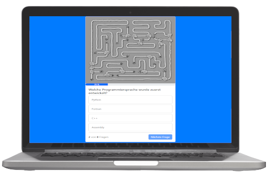

Explore a selection of my work here - Interact with projects to see my
skills in action.
Join
Angular | Typescript | HTML | CSS | FIREBASE
Task manager inspired by the Kanban System. Create and organize tasks
using drag and drop functions, assign users and categories.
El Pollo Loco
JavaScript | HTML | CSS
A simple Jump-and-Run game based on an object-oriented approach. Help
Pepe to find coins and bottles to fight against the endboss.
Ring of fire
Angular | Typescript | SCSS | FIREBASE
Players take turns drawing a card from the deck. The card they draw
corresponds to a specific rule they have to follow. The game ends when
either the last king card is drawn and a player drinks the entire
“King's Cup” or the last card is drawn.

Quiz App
HTML | CSS
A simple quiz app featuring computer science questions.